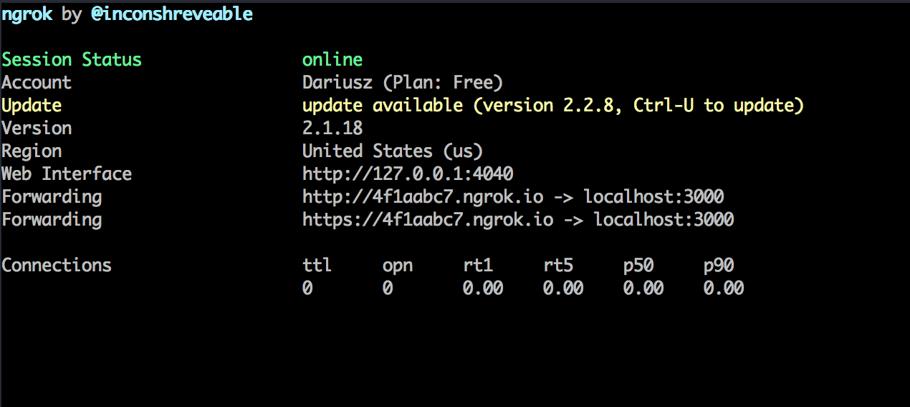
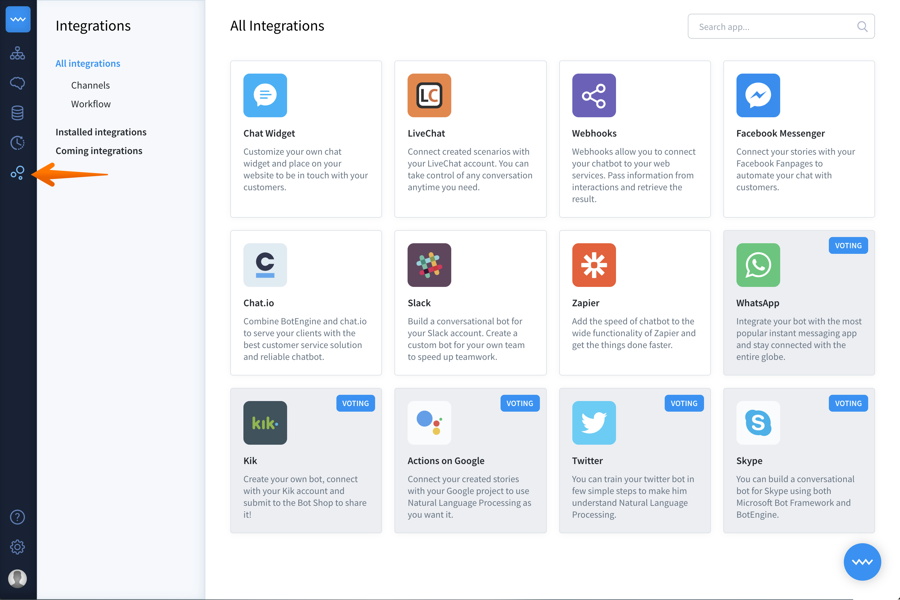
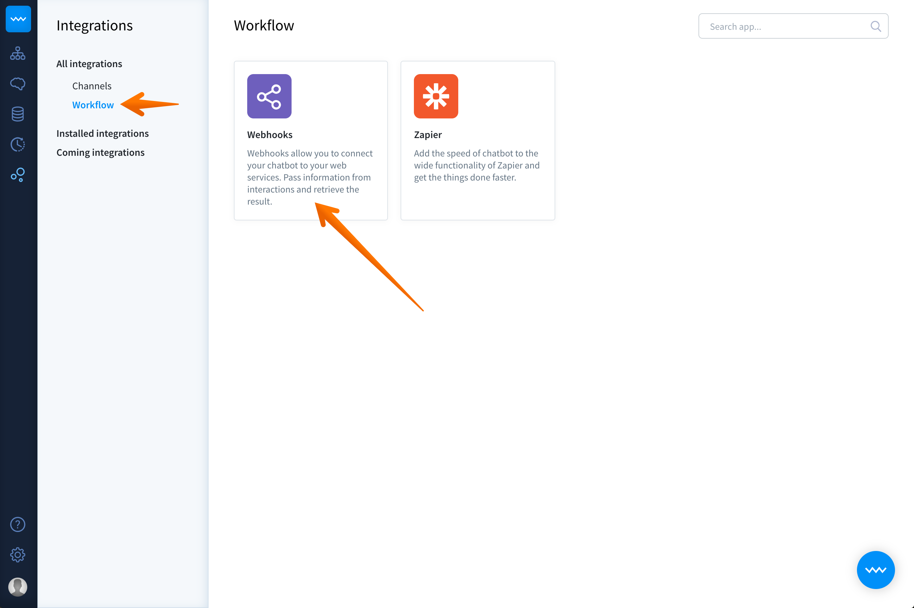
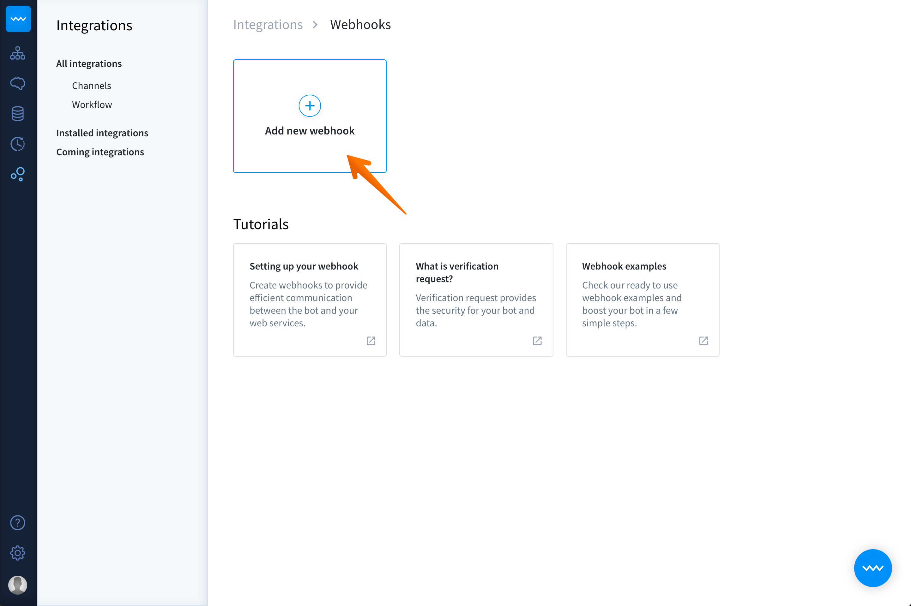
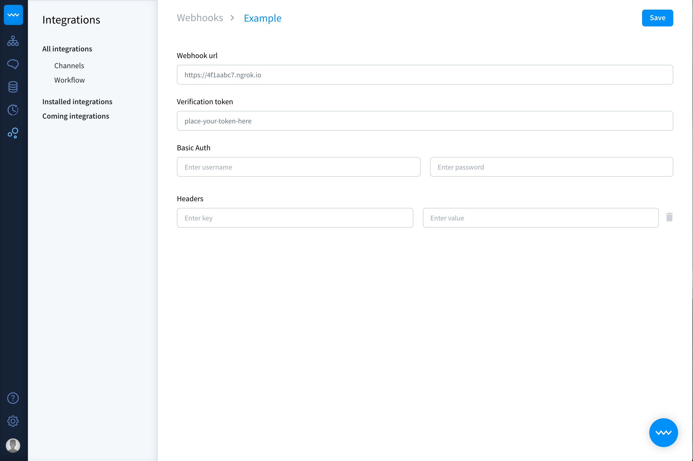
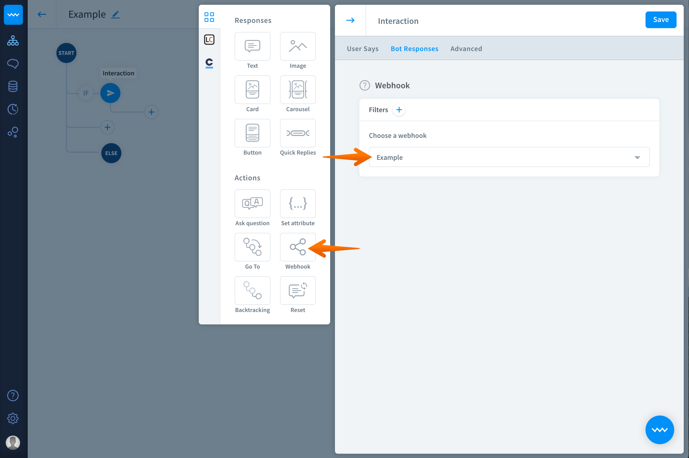

Last update:
Create webhooks to provide efficient communication between the bot and your web services.
Setup steps
To follow this guide to set up your webhook, all you need is a computer with Node.js installed.
Other Languages
To follow this guide, you will need to install Node.js, but you can write your webhook in whatever server-side language you like.
-
Create a new Node.js project
Run the following on the command line to create the needed files and dependencies:
mkdir botengine-webhooks // creates a directory cd botengine-webhooks // open created directory touch index.js // creates empty index.js file npm init // creates package.json npm install express body-parser --save // installs using dependencies -
Create a HTTP server
Add the following code to
index.jsand put your verification token intotokenvariable.What is verification token?
Verification should be used to verify if the request comes from a trusted source. It’s optional and can be empty.'use strict'; const express = require('express'); const bodyParser = require('body-parser'); const app = express().use(bodyParser.json()); // creates http server const token = 'VERIFICATION_TOKEN'; // type here your verification token app.listen(3000, () => console.log('[BotEngine] Webhook is listening')); This code creates an HTTP server that listens for requests on port 3000. For this guide we are using Express.js, but you can do it using only
Node.jsor any other framework you love. -
Return the challenge
Add the following code to
index.js:app.get('/', (req, res) => { // check if verification token is correct if (req.query.token !== token) { return res.sendStatus(401); } // return challenge return res.end(req.query.challenge); }); This code is required to ensure your webhook is authentic and working.
In this code, we’re checking that your verification token is correct with the one sent in the request. We’re also returning a challenge response to confirm that your webhook works correctly.
-
Webhook endpoint
Add the following code to `index.js`:
app.post('/', (req, res) => { // check if verification token is correct if (req.query.token !== token) { return res.sendStatus(401); } // print request body console.log(req.body); // return a text response const data = { responses: [ { type: 'text', elements: ['Hi', 'Hello'] } ] }; res.json(data); }); This code creates your webhook endpoint.
Similarly, as in the previous step, we have to check if your verifying token and the received token are the same. If these tokens are identical, BotEngine returns the object and an example bot response.
Note that the endpoint returns a
200OKresponse, which tells the BotEngine the event that has been received.Main steps in the verification process:
- To create a verification token, chose a random string and assign its value to the
tokenparameter. - Go to your BotEngine dashboard and select Webhooks. Enter the verification token in the appropriate field.
- BotEngine sends a
GETrequest to your webhook with the verification token in thetokenparameter of the query string. - Verify the received token with the verification token. If both string match, respond with the
challengeparameter. - Your webhook has been verified successfully.
- To create a verification token, chose a random string and assign its value to the
-
Publish your webhook server
In this tutorial we’re using
ngrokwhich exposes local servers behind NATs and firewalls to the public internet over secure tunnels. For production usage you should deploy your webhook code to the server of your choice. This can be your own hardware or cloud-based service like AWS or Heroku.- Run the following command to start your webhook on the localhost server:
node index.js. -
Install
ngrokto expose the web server, you’ve just created, running on your local machine to the internet. Most people set an alias for ngrok or keep it in their user folder for easy access in the command line.On Linux and OSX you can unzip ngrok from a terminal with the following command
$ unzip /path/to/ngrok.zip. On Windows, just double click ngrok.zip. -
In the folder with the created
index.jsfile, run the following command:node index.js -
Run ngrok in a new terminal window to listen on the port 3000.
./ngrok http 3000 -
Now you should see a similar screen the the one below. Note that the address in the
Forwardingline states the public address of your webhook. In this case, it ishttps://4f1aabc7.ngrok.io. Save this address for later. 
- Run the following command to start your webhook on the localhost server:
-
Set up webhook in BotEngine
- Go to BotEngine app and select integrations from the left panel of your dashboard.
- Go to workflow and select webhooks. 
- Click on Create new webhook button. 
- Now you’re in the webhook view. Give your webhook a name, to quickly identify it and paste its URL. In this example:
https://4f1aabc7.ngrok.io.  - Enter the verification token chosen in step 2.
- Click the save button to keep your changes.
-
Connect interaction with created webhook
- Go to the interaction you want to connect your webhook with and select the bot responses section.
- Select your webhook. You can identify it by it’s name. 
- Click on the
savebutton to keep your changes.
-
Test your story with webhooks
Now your webhook is ready to test. A triggered interaction that has a webhook should send, as the response, the message from your webhook.